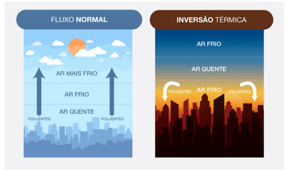
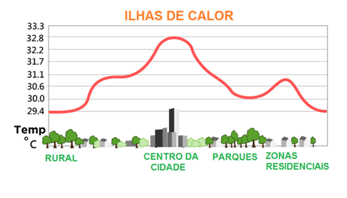
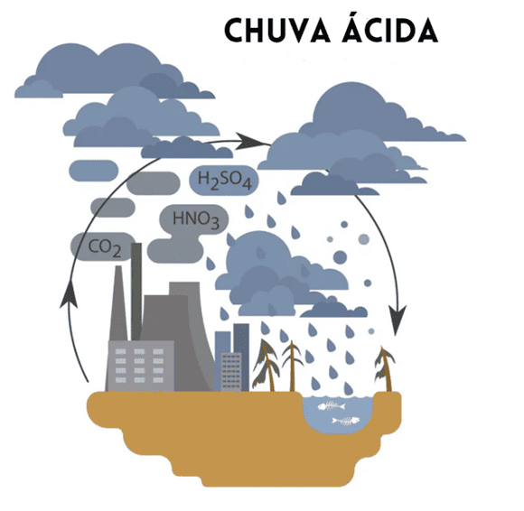
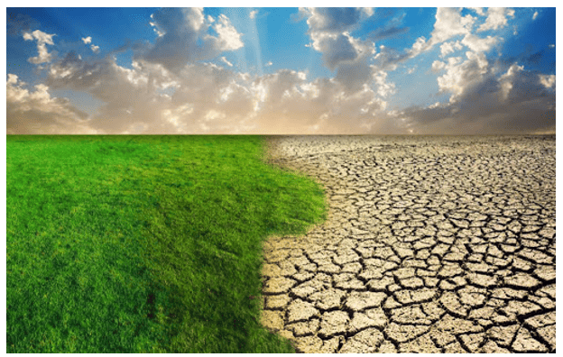
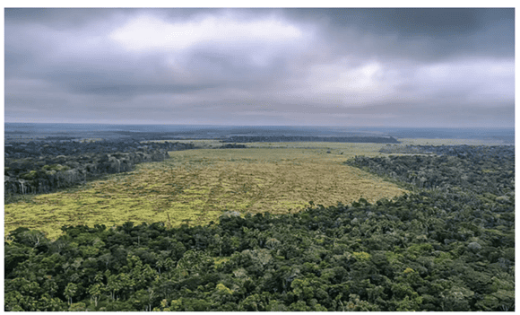

Conteúdo: Ilhas de calor; Inversão térmica; Chuva ácida; Desertificação; Desmatamento.
Objetivo: Identificar as mudanças climáticas locais, principalmente aquelas ligadas às áreas
urbanas, e entender os processos que as causam e as consequências para as pessoas que vivem nessas áreas.
Digite seu nome
Introdução
Na aula passada, falamos sobre as mudanças climáticas globais, como
aquecimento global, El Niño, La Niña, camada de ozônio e efeito estufa. Vimos como esses processos acontecem
em escala planetária e o quanto eles podem impactar a vida dos seres vivos, inclusive a nossa.
Agora, em , vamos
Hoje, vamos mudar um pouco o foco e observar o que acontece bem pertinho da gente, no nosso dia a dia nas
cidades. Vamos entender as mudanças climáticas locais, ou seja,
aquelas que acontecem no espaço onde vivemos.
Questões para serem respondidas no caderno sobre o tema da aula de hoje:
1. O que é a inversão térmica e por que ela agrava a poluição nas cidades?
2. Por que o fenômeno da inversão térmica ocorre com mais frequência no inverno?
3. O que são ilhas de calor e quais são suas principais causas?
4. Qual é a relação entre o crescimento urbano e a formação das ilhas de calor?
5. O que é a chuva ácida e como ela se forma?
6. Quais são os impactos da chuva ácida no ambiente e nas cidades?
7. O que é a desertificação e como a ação humana acelera esse processo?
8. Quais são as principais consequências da desertificação para a população local?
9. Quais são as causas mais comuns do desmatamento no Brasil?
10. De que forma o desmatamento contribui para o aquecimento global?
1. Inversão Térmica
Em condições normais, o ar próximo ao solo é aquecido durante o dia e sobe, misturando-se com o ar mais frio
das
camadas superiores. Esse movimento ajuda a dispersar a poluição e a
renovar o ar das cidades.
Na
inversão térmica
, o processo se inverte: o ar frio, mais pesado,
fica preso
perto do solo, enquanto o ar quente permanece acima, criando uma espécie de tampa. Assim, os poluentes não
conseguem subir
e acabam se concentrando nas áreas mais baixas da atmosfera.
Esse fenômeno é mais comum em dias frios, com pouco vento e poucas
nuvens, principalmente no inverno.
Nessas condições, a atmosfera fica estável, o que impede a circulação do ar e favorece o acúmulo de
poluição.
As principais consequências são o aumento da poluição
atmosférica,
a piora da qualidade do ar e o crescimento de doenças respiratórias entre a população urbana.
Um exemplo clássico é São Paulo, que já enfrentou vários episódios de inversão térmica com forte acúmulo de
fumaça
sobre a cidade.

2. Ilhas de Calor

As
ilhas de calor
acontecem quando uma cidade ou área urbana fica
mais quente do que as regiões ao seu redor.
Isso ocorre porque construções como prédios, ruas e estacionamentos absorvem o calor do Sol e o liberam
lentamente,
enquanto áreas naturais — florestas, parques e rios — ajudam a resfriar o ar.
Dessa forma, as cidades se transformam em verdadeiros “bolsões de
calor”,
apresentando temperaturas mais altas durante o dia e até mesmo à noite, quando comparadas às regiões
próximas.
Esse fenômeno pode ocorrer tanto em cidades grandes quanto pequenas, em diferentes estações do ano.
Entre as principais causas estão a redução da vegetação,
o uso de materiais urbanos que acumulam calor (como asfalto e concreto), e o excesso de prédios que
dificultam a circulação do ar. Além disso, as atividades humanas e a poluição contribuem para intensificar o
problema.
As ilhas de calor podem elevar as temperaturas urbanas em até 7 °C em relação às áreas vizinhas,
afetando a qualidade do ar, o conforto térmico e até o consumo de energia das cidades.
3. Chuva Ácida

A
chuva ácida é um tipo de precipitação — como chuva, neblina,
granizo ou até poeira —
que contém ácidos fortes, principalmente o ácido sulfúrico (H₂SO₄)
e o ácido nítrico (HNO₃). Ela ocorre quando gases poluentes
liberados
na atmosfera se misturam com a água das nuvens e retornam à superfície terrestre.
A principal causa desse fenômeno é a emissão de gases poluentes
como o dióxido de enxofre (SO₂)
e os óxidos de nitrogênio (NOx), resultantes da queima de combustíveis fósseis, das atividades industriais e
do uso intenso de veículos.
Esses gases podem se espalhar pelo vento e atingir até regiões sem indústrias.
Quando esses poluentes reagem com a água e o oxigênio na atmosfera, formam ácidos que se misturam às nuvens
e depois caem sobre a Terra com a chuva. Isso torna lagos, rios e solos mais ácidos, afetando plantas,
animais e
também as construções urbanas.
Além dos danos ambientais e à infraestrutura, a chuva ácida também contribui para a piora da qualidade do ar,
podendo causar problemas respiratórios nas pessoas e aumentar os impactos da poluição nas cidades.
4. Desertificação

A
desertificação
é o processo em que terras antes férteis
se degradam e passam a se parecer com desertos, tornando-se secas, pobres em nutrientes e com pouca
vegetação.
Esse fenômeno pode ocorrer por causas naturais, como mudanças
climáticas e secas prolongadas,
ou pela ação humana.
Entre as principais causas estão o desmatamento,
a agricultura intensiva, o pastoreio excessivo e a exploração descontrolada da água e dos recursos naturais.
Essas práticas reduzem a capacidade do solo de se regenerar e o tornam mais vulnerável à erosão.
As consequências são graves: perda da biodiversidade, diminuição da produtividade agrícola,
escassez de água e migração forçada de populações rurais. Regiões como o Sahel (na África),
o Mar de Aral (na Ásia Central) e o deserto de Gobi (na China) são exemplos marcantes desse processo.
O combate à desertificação passa por ações de reflorestamento,
uso consciente da água, práticas agrícolas sustentáveis e cooperação internacional,
como a Convenção da ONU de Combate à Desertificação.
5. Desmatamento

O
desmatamento
é a remoção total ou parcial da cobertura vegetal
natural,
geralmente para dar lugar à agricultura, pecuária, mineração ou
expansão urbana.
Segundo a FAO, as florestas cobrem cerca de 31% da superfície da Terra, e mais da metade está concentrada em
países como
Brasil, Canadá, Rússia, China e Estados Unidos.
As principais causas do desmatamento são a agricultura comercial,
responsável por quase 40% do desmatamento tropical, seguida pela agricultura de subsistência e pela
exploração de madeira.
Desde 1990, o planeta perdeu aproximadamente 420 milhões de hectares de florestas.
Na Amazônia, o desmatamento é um problema grave: o Brasil já perdeu cerca de 69,5 milhões de hectares até
2021.
As consequências incluem perda da biodiversidade, aumento dos gases de efeito estufa, erosão do solo,
redução da qualidade da água e agravamento das mudanças climáticas.
Para combater esse problema, o Brasil estabeleceu a meta de desmatamento zero
até 2030.
As ações incluem práticas sustentáveis, monitoramento e fiscalização, proteção de terras indígenas e
incentivos econômicos,
como o Fundo Amazônia e o pagamento por serviços ambientais.
O Plano PPCDAm é um exemplo de sucesso, tendo reduzido o desmatamento em 83% entre 2004 e 2012.
Não existe pergunta boba! A Ciência é feita de perguntas!
P:Por que o desmatamento é considerado uma das maiores
ameaças ao meio ambiente?
R:
O desmatamento destrói ecossistemas inteiros, causa a perda de biodiversidade e contribui para o
aquecimento global devido ao aumento da emissão de dióxido de carbono (CO₂).
Além disso, afeta o ciclo da água e reduz a qualidade de vida das populações locais.
P:Como o desmatamento na Amazônia pode impactar outras
regiões do Brasil?
R:
A Amazônia influencia o clima de todo o país por meio dos chamados rios voadores,
massas de ar úmidas que ajudam a formar chuvas. Quando há desmatamento, essas correntes diminuem,
afetando a agricultura, os reservatórios de água e o clima em regiões distantes, como o Sudeste.
P:O que cada pessoa pode fazer para ajudar a reduzir o
desmatamento?
R:
Pequenas ações fazem diferença, como consumir produtos de origem sustentável,
evitar o desperdício, apoiar projetos de reflorestamento e cobrar políticas públicas de preservação
ambiental.
A conscientização é o primeiro passo para proteger as florestas.